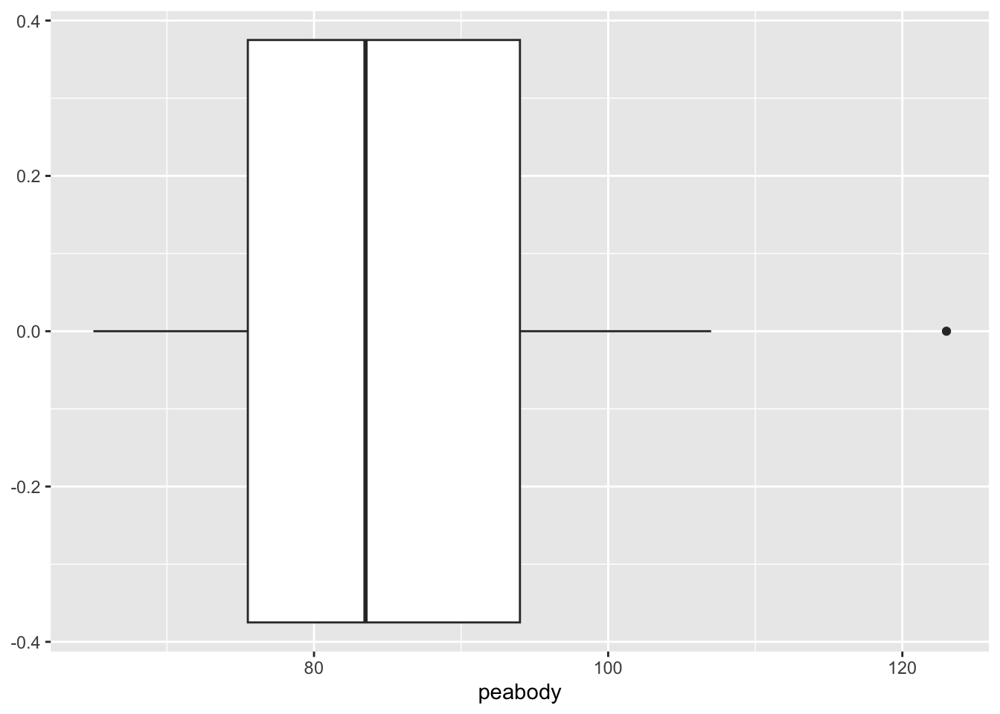
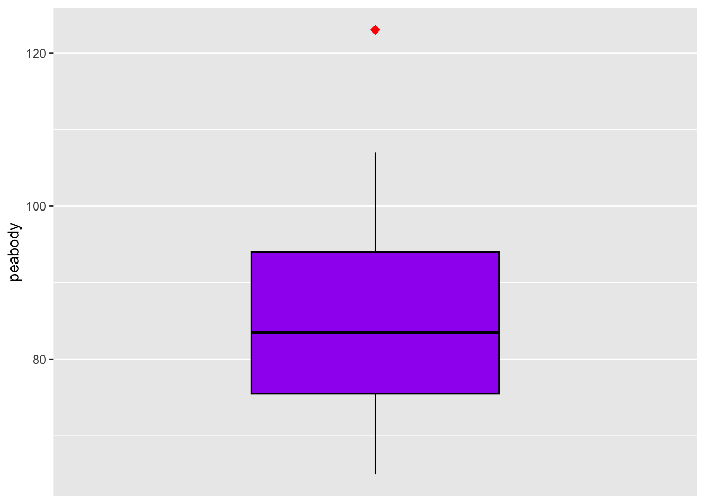
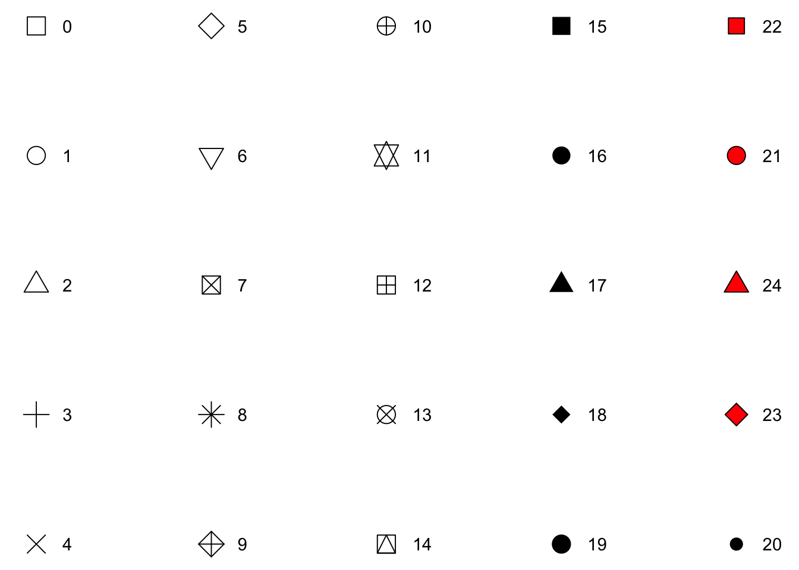
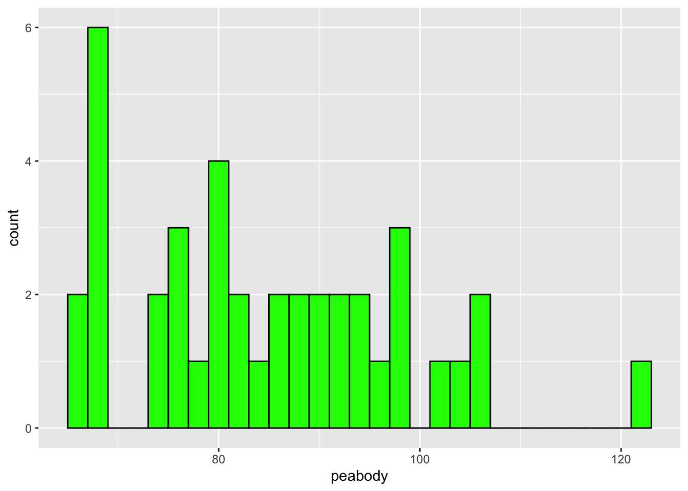
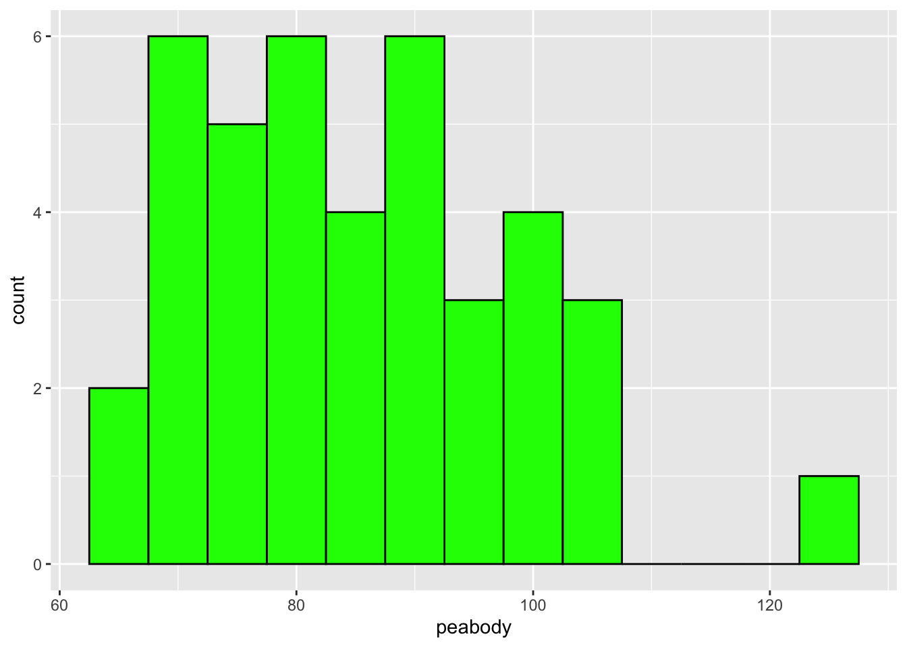
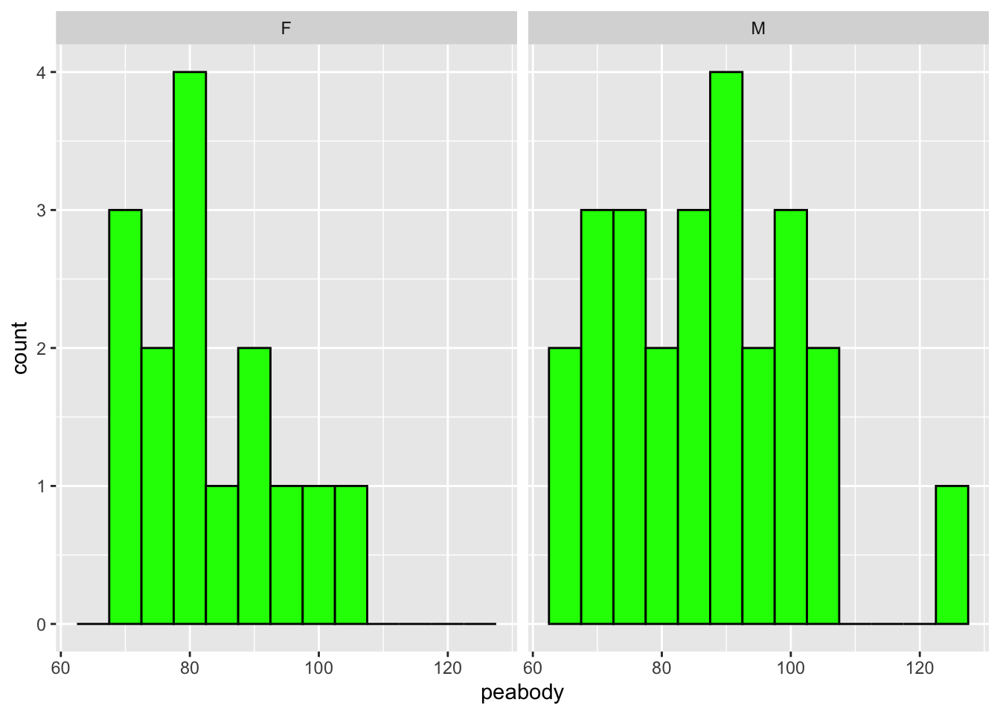
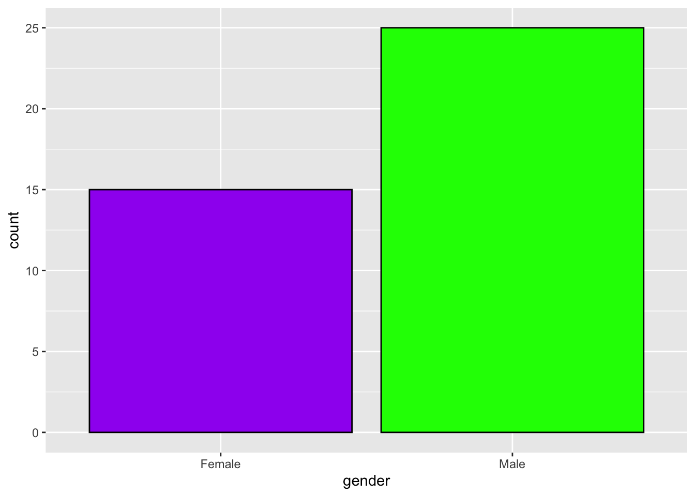
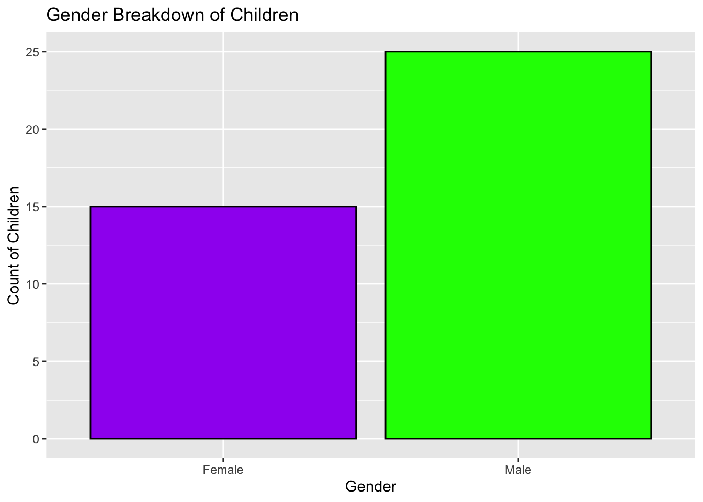
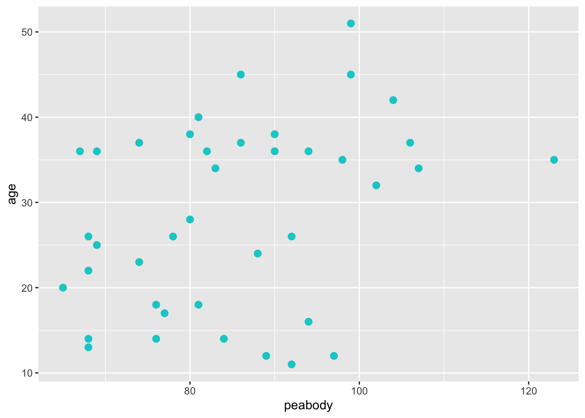

Chapter 4 Summarizing Data
4.2 Packages
- Here is a list of packages that we will use today:
modeesthas themfv()function for the mode.momentshas theskewness()andkurtosis()functions.tidyversecontains theggplot2package for data visualization.
- For those who hope to dive into the fancier data visualization tools, consider:
- RShiny at https://shiny.posit.co/r/gallery/.
- Extensions of the
ggplot2package at https://exts.ggplot2.tidyverse.org/gallery/.
4.3 Numerical methods
4.3.1 Peabody data
For the purpose of today’s demonstration, we will use the following data from 40 children who completed the Peabody Developmental Motor Scales (PDMS).
The PDMS is a popular standardized test used by physical and occupational therapists for children less than six.
The variables include peabody scores, gender, and age (in months).
The dataset is as follows:
# Peabody data
peabody <- c(123,99,80,81,90,104,69,86,107,94,82,99,83,98,86,74,67,90,106,102,
68,80,76,65,69,81,76,68,84,88,68,92,92,97,78,77,94,74,89,68)
gender <- c("M","F","F","F","F","M","F","F","F","F","M","M","M","M","M","M","M",
"M","M","M","F","F","F","M","F","F","F","M","M","F","M","M","M","M",
"M","M","M","M","M","M")
age <- c(35,45,38,40,38,42,36,45,34,36,36,51,34,35,37,37,36,36,37,32,22,28,18,20,
25,18,14,26,14,24,14,26,11,12,26,17,16,23,12,13)- These variables can be stored in a data frame with the following code:
4.3.4 Skewness
There are multiple methods that can be used to calculate skewness in R:
You could use the formula for skewness.
# Define sample size
n <- length(peabody)
# Compute the skewness
(sum((peabody-mean(peabody))^3)/n)/(sum((peabody-mean(peabody))^2)/n)^(3/2)## [1] 0.524655- But the
skewness()function in themomentspackage makes it even easier.
##
## Attaching package: 'moments'## The following object is masked from 'package:modeest':
##
## skewness## [1] 0.5246554.3.5 Kurtosis
There are multiple methods for calculating kurtosis in R.
You can use the formula:
## [1] 2.911796- Or you can use the
kurtosis()function in themomentspackage.
## [1] 2.9117964.3.6 Using the tidyverse package
- tidyverse allows us to use the
summarise()function.- which allows us to get various descriptive statistics such as minimum, maximum, mean, median, variance, standard deviation, skewness, kurtosis, etc.
- As a small exercise, try to run the code below. What do you see?
4.4 Visual methods
Be sure to refer to the cheatsheet I have attached on CatCourses!
Every useful piece of information is there!
4.4.1 Using the tidyverse package
The
ggplot2package is a core component of the tidyverse that allows us to build data visualizations.ChatGPT is so good at programming
ggplot2code for you. But of course, sometimes it itself does produce wrong code, particularly when you want to do complicated visualizations.- It is suggested to know the fundamental grammar to be a smart user of the AI!
The idea behind
ggplot2is that every new concept we introduce will be layered on top of the information we’ve already learned.In this way,
ggplot2uses layers of information added on top of each other to help build the graph.- This is most evidenced by how each line is separated by a plus sign (+). Each line of code is a different layer of the graph.
You’ll see what I mean as we go through several example graphs.
Remember to work with a tibble instead of a data frame. Tibbles work much better in tidyverse.
## Warning: package 'ggplot2' was built under R version 4.2.3## Warning: package 'tidyr' was built under R version 4.2.3## Warning: package 'readr' was built under R version 4.2.3## Warning: package 'dplyr' was built under R version 4.2.3## Warning: package 'stringr' was built under R version 4.2.3## ── Attaching core tidyverse packages ──────────────────────── tidyverse 2.0.0 ──
## ✔ dplyr 1.1.4 ✔ readr 2.1.5
## ✔ forcats 1.0.0 ✔ stringr 1.5.1
## ✔ ggplot2 3.5.1 ✔ tibble 3.2.1
## ✔ lubridate 1.9.3 ✔ tidyr 1.3.1
## ✔ purrr 1.0.2
## ── Conflicts ────────────────────────────────────────── tidyverse_conflicts() ──
## ✖ dplyr::filter() masks stats::filter()
## ✖ dplyr::lag() masks stats::lag()
## ℹ Use the conflicted package (<http://conflicted.r-lib.org/>) to force all conflicts to become errors## # A tibble: 40 × 3
## peabody gender age
## <dbl> <chr> <dbl>
## 1 123 M 35
## 2 99 F 45
## 3 80 F 38
## 4 81 F 40
## 5 90 F 38
## 6 104 M 42
## 7 69 F 36
## 8 86 F 45
## 9 107 F 34
## 10 94 F 36
## # ℹ 30 more rows- The type of plot you want to make is referred to as a
geom. There are dozens ofgeomoptions available inggplot2. For todays’ lesson, we will focus on four specificgeoms:geom_boxplot()geom_histogram()geom_bar()geom_point()
- When using
ggplot2, plots will take the following general form:
First, you start with the
ggplot()function, where you will specify the data.Second, you will include the
aesargument, which is where you specify the variable(s) you want to plot.Third, you select the geom type (e.g.,
geom_boxplot()) you are interested in plotting. This is also where you can begin to customize your plots.
4.4.2 Boxplot
Boxplots are a useful method for presenting the dispersion of the data, the symmetry of the distribution, and the potential outliers (or extreme scores).
The following code provides a basic
ggplot2setup for a boxplot of the peabody scorees:

- By adding another layer, you can further customize your plot. In the code below, I illustrate how you can change the coloring of the boxplot and remove the tick marks on the x-axis.
ggplot(data = peabody_tib, aes(y=peabody)) +
geom_boxplot(fill = "purple", colour = "black") +
scale_x_discrete( ) ## removes x-axis ticksYou can also change the shape and color of the outlier.
All you have to do is add another line of code that specifies the outlier color, shape, and size.
ggplot(data = peabody_tib, aes(y=peabody)) +
geom_boxplot(fill = "purple", color = "black",
outlier.color = "red", outlier.shape = 18, outlier.size = 3) +
scale_x_discrete( ) ## removes x-axis ticks
- There are several available shapes in
ggplot2.- I provide some examples below, but you can see more here: https://ggplot2.tidyverse.org/articles/ggplot2-specs.html
shapes <- data.frame(
shape = c(0:19, 22, 21, 24, 23, 20),
x = 0:24 %/% 5,
y = -(0:24 %% 5)
)
ggplot(shapes, aes(x, y)) +
geom_point(aes(shape = shape), size = 5, fill = "red") +
geom_text(aes(label = shape), hjust = 0, nudge_x = 0.15) +
scale_shape_identity() +
expand_limits(x = 4.1) +
theme_void()
4.4.3 Histograms
Histograms are a useful method for presenting the dispersion of the data and the symmetry of the distribution.
The following code provides the setup for a histogram of the peabody scores:
## `stat_bin()` using `bins = 30`. Pick better value with `binwidth`.
- You can change the bindwidth of the histogram using the following code:
ggplot(data = peabody_tib, aes(peabody)) +
geom_histogram(color = "black", fill = "green",
binwidth = 5)
Alternatively, you could set the total number of bins with the
binsargument.Sometimes you want to display plots for a subset of your data. This can be accomplished using the
facet_wrap()function.
ggplot(data = peabody_tib, aes(peabody)) +
geom_histogram(color = "black", fill = "green",
binwidth = 5) +
facet_wrap(~gender, nrow = 1)
4.4.4 Bar charts
- Bar charts are a useful method for displaying categorical data. They can show the number of cases in each of the categories.
- Perhaps you would like to change the
Fto Female and theMto Male. The x-axis ticks can be changed using the following trick:
ggplot(data = peabody_tib, aes(gender)) +
geom_bar(color = "black", fill = c("purple","green")) +
scale_x_discrete(labels = c("Female", "Male")) ## Changes the labels on the x-axis ticks
- Sometimes it can be helpful to change the plot title, x-axis and y-axis.
ggplot(data = peabody_tib, aes(gender)) +
geom_bar(color = "black", fill = c("purple","green")) +
scale_x_discrete(labels = c("Female", "Male")) +
labs(x='Gender',
y='Count of Children',
title='Gender Breakdown of Children') ## Allows you to change the title and axis labels
4.4.5 Scatterplots
- Scatterplots are a useful method for visualizing the relationship between two numerical variables. We will not discuss how to interpret the scatterplot today, but I thought it might be helpful for you to see how the
geom_point()function works.

4.4.6 Important points about data visualization
At its core, the term ‘data visualization’ refers to any visual display of data that helps us understand the underlying data better.
Generally, there are a few charactersitics of all godo plots [Note: This is not an exhaustive list].
- Clearly-labeled axes.
- Text that are large enough to see.
- Axes that are not misleading.
- Data that are displayed appropriately considering the type of data you have.
4.5 Final exercise
Using the age variable, find the following summary statistics:
- mean
- median
- standard deviation
- skewness
- kurtosis
Using the age variable, create a histogram with the following features:
- colored bars.
- 10 bins [Hint: use
binsargument]. - a title of “Age of Children (in months)” [Hint: use
labs()function].